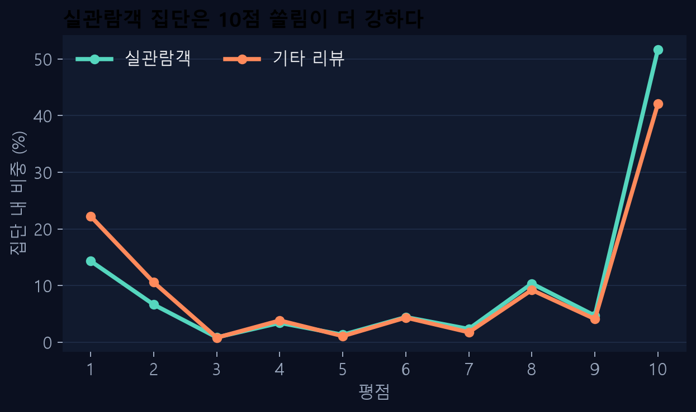
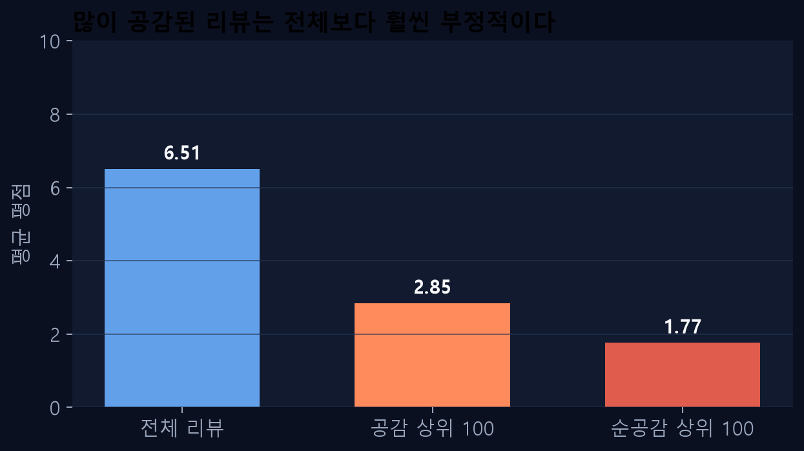
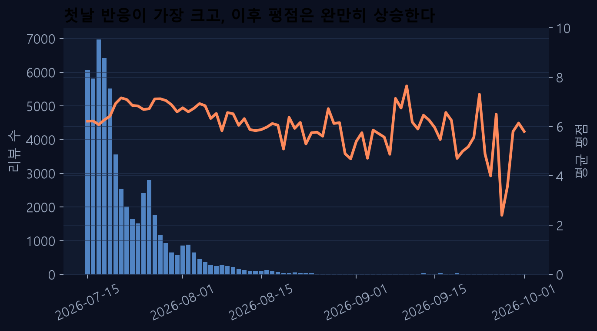
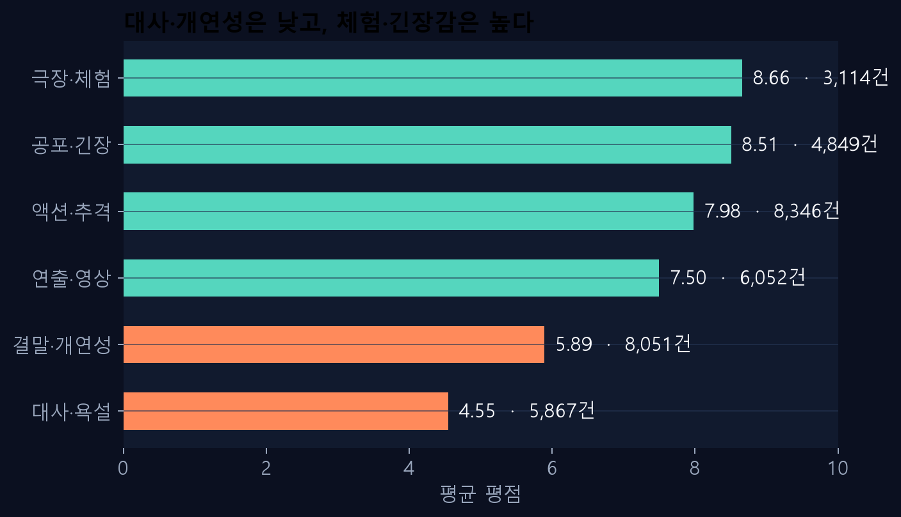

영화 호프
평균만으로는
설명되지 않는다
58,659건의 관람평을 따라가며, 누가·언제·무엇을 말했는지가 평가를 어떻게 바꾸는지 읽었습니다.
먼저, 데이터는 충분히 크고
깨끗하게 수집되어 있다
본문이 비어 있는 행은 513건. 평점 집계에는 포함하고, 키워드 분석에서는 제외했습니다.
6.51점은
중간값이 아니다
1점과 10점이 전체의 64.6%를 차지합니다. 평균은 양쪽의 목소리를 눌러 담은 숫자입니다.

실관람객 리뷰는
더 높고 더 극단적이다
표시값은 네이버의 실관람객 여부 필드입니다. 미관람 여부나 인과관계를 뜻하지 않습니다.

가장 많이 공감된 글은
가장 부정적이다
공감 상위 100건의 평균은 2.85점. 이 작은 집합이 전체 공감의 32.9%를 차지합니다.
첫날은 반응이 쏟아지고,
이후 평점은 천천히 올라간다

누적 공감은 작성 후 경과 시간과 노출량의 영향을 함께 받습니다.
평가를 가르는 건
무엇을 봤는가다
키워드가 등장한 리뷰의 평균 평점을 비교했습니다. 한 리뷰는 여러 주제에 포함될 수 있습니다.

액션은 끌어올리고,
대사는 끌어내린다
같은 영화 안에서 체험의 쾌감과 이야기의 설득력이 서로 다른 점수를 만든다.
세 가지 인사이트를
어떻게 검증할까
날짜를 맞춰 비교
실관람객 여부와 작성 시점을 함께 통제해 집단 차이가 유지되는지 확인.
정렬 기준을 바꿔보기
공감순·최신순·무작위 표본을 나란히 보며 노출 효과를 분리.
문장 단위 감성 분석
액션과 대사를 동시에 언급한 문장을 직접 확인해 키워드 가설을 검증.
호프를 읽는 세 가지 렌즈
분포
평균 6.51점보다 1점과 10점에 몰린 양극화가 먼저 보인다.
노출
공감 상위 리뷰는 전체 여론보다 훨씬 부정적이다.
맥락
액션·긴장감은 고평점, 대사·개연성은 저평점과 연결된다.
다음 단계는 “누가 더 높게 평가했나”를 넘어, “어떤 장면의 어떤 경험이 점수를 움직였나”를 문장 단위로 확인하는 것입니다.
원본 CSV · 분석 코드 · 지표 JSON은 저장소에 함께 포함되어 있습니다.